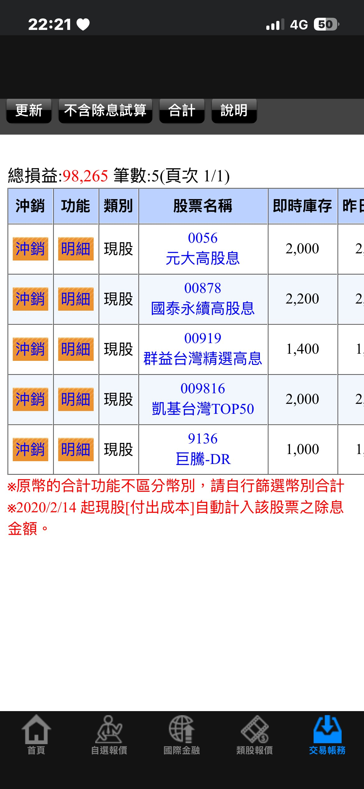
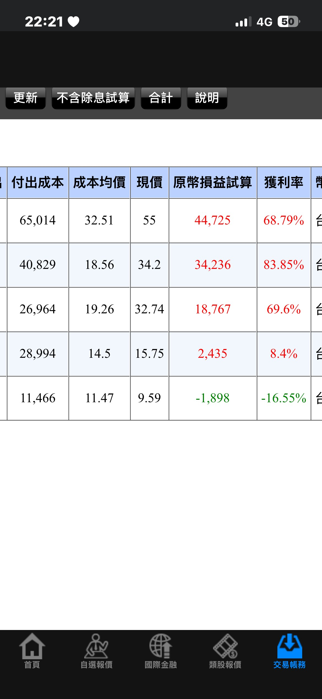

2026 年 8 月存股日記：因收購消息買進巨騰-DR，我的持倉現況
8月最大的動作，是我第一次買進一檔跟平常存股邏輯不一樣的標的：巨騰-DR（9136）。原因是那陣子看到市場在討論藍思科技（Lens Technology）要收購巨騰國際的消息，覺得這種產業併購題材有想像空間，就小額買了一張試試看。先說結論：目前這筆帳面是虧的，不是什麼神操作，這篇就照實紀錄整個過程跟現況。
巨騰-DR 是什麼？為什麼買它？
巨騰國際是全球數一數二的筆電機殼代工廠，巨騰-DR（9136）是它在台灣掛牌的台灣存託憑證（DR）。2026年5月，市場開始傳出藍思科技要收購巨騰國際約27.81%股權的消息，這種等級的產業併購案通常會讓市場重新評估這家公司的價值，我當下的想法是：既然題材已經浮上檯面、被市場關注，就先小額卡位觀察看看。
這不是我平常「配息+定期定額」的存股邏輯，比較接近題材/事件驅動的短期嘗試，所以我只放了1張（1,000股），沒有重壓——這是我給自己的紀律：跟核心存股部位分開看待，虧了也不影響大局。
8月持倉現況（真實截圖）
以下是我證券帳戶的未實現損益截圖，帳號與姓名已遮蔽：


| 標的 | 持股 | 成本均價 | 現價 | 損益 | 獲利率 |
|---|---|---|---|---|---|
| 0056 元大高股息 | 2,000股 | 32.51 | 55.0 | +44,725 | +68.79% |
| 00878 國泰永續高股息 | 2,200股 | 18.56 | 34.2 | +34,236 | +83.85% |
| 00919 群益台灣精選高息 | 1,400股 | 19.26 | 32.74 | +18,767 | +69.6% |
| 009816 凱基台灣TOP50 | 2,000股 | 14.50 | 15.75 | +2,435 | +8.4% |
| 9136 巨騰-DR | 1,000股 | 11.47 | 9.59 | -1,898 | -16.55% |
總損益：+98,265元（5檔加總，截圖時點數字）。
這筆巨騰-DR現在是虧的，我怎麼看？
買進均價11.47元，現價9.59元，帳面虧16.55%，不算小。收購題材消息面出來到真正完成交易（如果真的完成）中間有很長的不確定性——交易條件、主管機關審核、股權交割，任何一關卡住都可能讓股價反應跟預期不同。我這次的經驗是：題材消息本身不等於股價會照你想的方向走，尤其這種還在協議階段、沒有完全定案的併購案，波動比我原本想的更大。
因為只放了1張、跟核心持股分開管理，這筆虧損不影響我整體的存股計畫，我會繼續觀察後續收購案的進展，不會因為短期帳面虧損就恐慌賣掉，但也提醒自己：這種事件驅動的操作本來就該用小額試水溫，不是拿來重壓的。
其他4檔ETF照常不動
核心持股0056、00878、00919、009816這個月都沒有加碼也沒有減碼，維持定期定額的節奏。四檔都是獲利中，00878獲利率最高來到83.85%，主要是這幾年高股息ETF整體走勢偏多加上長期持有攤平成本的效果。這幾檔是我真正的存股主力，巨騰-DR只是額外的小額嘗試，兩者性質不一樣，我自己會分開看待，不會混在一起判斷「這個月存股有沒有賺」。
結語
這篇老實記錄一筆虧損中的操作，是因為存股日記本來就該記真實狀況，不是只曬賺錢的部位。核心持股（0056/00878/00919/009816）繼續定期定額不動搖，巨騰-DR這種題材型小額嘗試會持續觀察，虧損也會照實更新，不會事後選擇性不提。
如果你也想確認自己目前持股的實際殖利率或損益，可以用下面的工具算算看：
常見問題
巨騰-DR（9136）是什麼？
巨騰國際在台灣掛牌的台灣存託憑證（DR），巨騰國際是全球主要的筆電機殼代工廠之一。2026年5月市場傳出藍思科技擬收購巨騰國際約27.81%股權的消息。
存股日記裡的操作是投資建議嗎？
不是。這是站長個人真實操作與心得紀錄，包含賺錢跟虧錢的部位都會照實寫，不構成任何投資建議，請自行評估風險。
題材/事件驅動的股票適合存股嗎？
跟穩定配息的存股邏輯不同，題材股波動較大、不確定性較高，比較適合小額嘗試、跟核心存股部位分開管理，不建議重壓。
資料來源與免責
藍思科技收購巨騰國際相關公告整理自MoneyDJ理財網公開報導（2026年5月）。持倉截圖為站長本人真實證券帳戶未實現損益畫面，帳號與姓名已遮蔽處理。本頁記錄個人真實操作與心得，不構成任何投資建議，投資有風險，請自行評估並對自己的決定負責。 發現數字有誤？回報給我們
延伸閱讀
立即使用 股利計算器，確認你的持股實際殖利率！